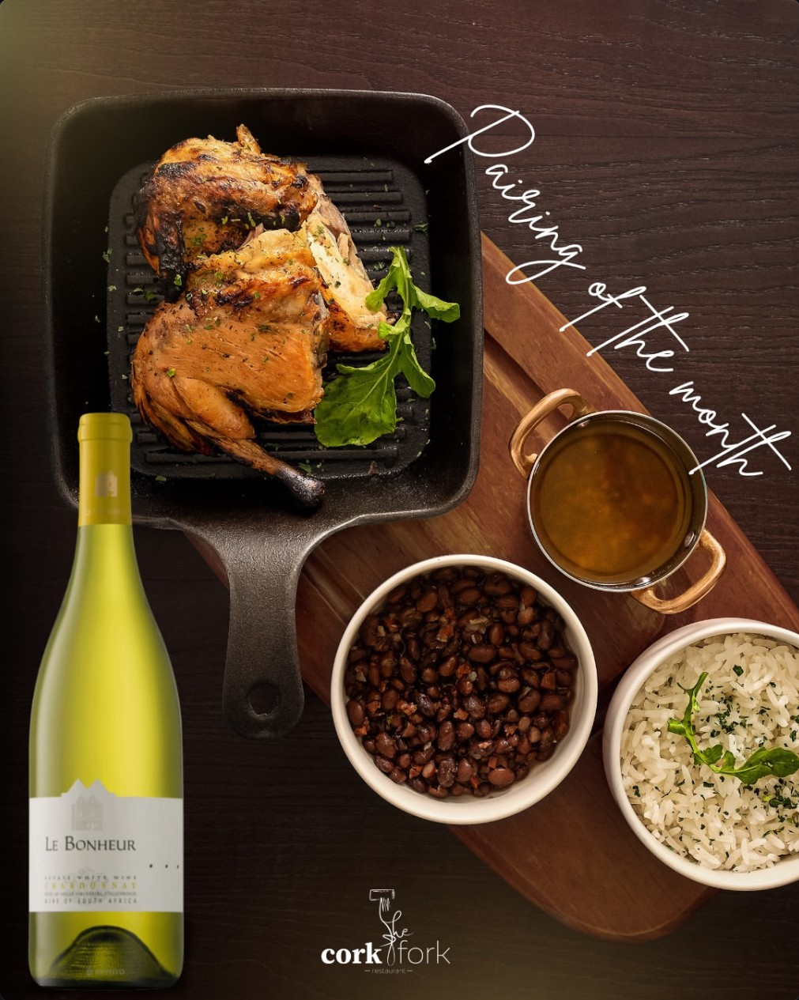

100% Namibian Kapana
Kapana-style beef sirloin strips, served with traditional pap and tomato relish.
N$265
Windhoek's favourite corner table
Breakfast, lunch and dinner under the stretch tent or in the garden — Namibian Kapana, butcher's block steaks and a full bar, seven days a week (well, six).
From the butcher's block
Namibian Kapana-style beef, oryx game loin and boerewors sit next to pasta, pizza and a burger menu built for a slow Sunday. Everything comes with our house-made sides and, if you ask nicely, a wine pairing.
Kapana-style beef sirloin strips, served with traditional pap and tomato relish.
N$265Oryx served on a bed of mashed potatoes and green beans, topped with almond (subject to season).
N$375Classic malva pudding served with your choice of custard sauce or vanilla ice cream.
N$85
Pairing of the month
Every month we put a dish and a bottle together and put it on the specials board. Ask your waiter what's pouring this month — or just trust us and order both.
The room


4.3 stars, 12 reviews and counting
“Great ambiance with corks and forks decor and signs to set a great culinary tone. Excellent attention to detail in our large group.”
Toni T, Nashville
“Great service from Anthony. View is peaceful and beautiful, had a wonderful day — the playing area is very nice for kids, will love to visit again.”
Nyanyukweni A
Centaurus Street, Windhoek · Tue–Sat 7am–10pm, Sun 7am–3pm